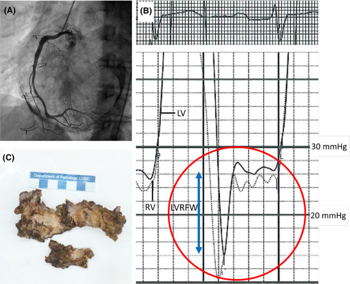

疾病 心臟
Constrictive pericarditis ｜ 束縮性心包膜炎 · Constrictive Pericarditis 筆記更新 2026-07-26· 整理狀態：可用
加入閱讀清單 其他名稱 4 CP · 束縮性心包膜炎 · 縮窄性心包炎 · Constrictive Pericarditis
30 秒行動卡
診斷關鍵 ：右心衰竭表現（頸靜脈怒張、腹水、水腫）但肺部乾淨 ＋ Kussmaul sign ＋ 心包叩擊音 → 影像看心包增厚／鈣化，心導管看 square root sign 與左右心室舒張末壓幾乎相等
治療骨架 ：心包切除術 是根治方法；利尿劑只是等手術前的橋接
絕對不可 ：把它當「難治型心衰竭」一路加利尿劑而不轉外科
定義與定位
病因與機制
flowchart TD
A["心包發炎或手術<br/>放射治療"] --> B["心包纖維化鈣化<br/>失去順應性"]
B --> C["心室總容積被固定"]
C --> D["舒張早期快速填充<br/>中後期戛然而止"]
C --> E["心室交互依賴<br/>左右心互相搶空間"]
D --> F["dip-and-plateau<br/>左右舒張末壓相等"]
E --> G["呼吸相變異度增大"]
B --> H["靜脈回流受阻<br/>右心衰竭表現"]
classDef key fill:#263238,stroke:#000,color:#fff,font-weight:bold
class F key
筆記中的流程與關係 兩個機制推出全部徵象
① 總容積被固定 → 舒張末壓左右相等、square root sign。
② 心室交互依賴 （左右心共用一個硬殼裡的固定空間）→ 吸氣時右心多進一點，中膈就把左心擠小 → 呼吸相變異度變大 、Kussmaul sign。

B 圖是同步 LV／RV 壓力：舒張早期快速下降後立即上升並進入 plateau，形成 dip-and-plateau／square-root sign；兩條曲線的舒張壓約落在 20–30 mmHg 且接近重疊。A 顯示厚重鈣化心包，C 為切除標本。Source: Van den Eynde et al., Clin Case Rep 2020, Figure 1 （CC BY 4.0）。
臨床表現
典型 ：體循環鬱血遠重於肺鬱血 ——頸靜脈怒張、肝腫大、腹水、下肢水腫，但躺平不太喘提示性 ：Kussmaul sign （吸氣時 JVP 不降反升）、心包叩擊音 （pericardial knock，舒張早期的高頻聲）少見但重要 ：長期被誤診為肝硬化（「心因性肝硬化」）而一路做腹水引流
→ 相關主訴流程：Edema 、Dyspnea
診斷
診斷條件
內容
影像
CT／MRI 看心包增厚（＞4 mm）或鈣化 （註：約 20% 心包厚度正常，不能靠它排除）
超音波
中膈彈跳（septal bounce）、下腔靜脈擴張、二尖瓣 E 波呼吸相變異 ≥25% （三尖瓣 ≥40%）
組織都卜勒
e′ ≥8 cm/s ——心肌是好的所以不慢，甚至隨填充壓升高而更快（annulus paradoxus ）
心導管
square root sign ；RVEDP ＞ 1/3 RVSP；LVEDP − RVEDP ≤5 mmHg ；RV 收縮壓 ＜50 mmHg
要開的檢查 ：Echocardiography → Cardiac catheterization↗ （鑑別診斷不清時的仲裁）
鑑別診斷
這一節是本篇的核心價值——三個病共用「裝不進血」，靠下表分開。
Cardiac tamponade 本篇 CP Restrictive cardiomyopathy
病灶
心包腔積液
心包硬殼 心肌本身
y descent
變鈍／消失 極明顯 （Friedreich）明顯
奇脈 pulsus paradoxus
有 少見
少見
Kussmaul sign 無 有 可有可無
RV 收縮壓
—
＜50 mmHg 常 ＞50 mmHg
LVEDP − RVEDP
幾乎相等
≤5 mmHg ＞5 mmHg
二尖瓣 E 波呼吸變異
大
≥25% ＜10%
組織都卜勒 e′
—
≥8 cm/s ＜8 cm/s
肝靜脈血流逆流
—
吐氣時 吸氣時
心肌壁厚度
正常
正常（心包增厚）
正常或增厚
心雜音／額外音
無
心包叩擊音 可有 MR、TR
治療
心包穿刺引流 心包切除術 治療基礎病，多需心臟移植
三者中只有心包填塞是急症
Beck's triad ＝ 低血壓 ＋ 頸靜脈怒張 ＋ 心音遙遠（distant heart sound） 。
注意心包摩擦音不是 Beck's triad 的成員 ——它是心包炎的徵象（填塞病人也可能有，但不算三徵之一）。
內容
首選檢查
心臟超音波 （不是胸部 X 光）——看積液 ＋ 右心房／右心室舒張期被壓扁
不可以做
利尿劑、血管擴張劑——降前負荷會讓心輸出量直接崩掉
撐住的手段
快速輸液 維持前負荷；必要時升壓劑
唯一的解
心包穿刺引流 ；外傷性、化膿性或反覆積液者考慮外科開窗
一旦有症狀＋超音波證據就立即穿刺，不必等其他檢查。
Kussmaul sign ≠ Kussmaul breathing
sign ：吸氣時 JVP 不降反升（CP、右心衰竭、限制性生理）。
breathing ：深而快的呼吸（代謝性酸中毒，如 DKA）。兩者常被拿來互當陷阱。
治療
情境
處置
根治
Pericardiectomy↗ 心包切除術
術前橋接
利尿劑減輕鬱血；但過度利尿會讓心輸出量掉下來
亞急性／發炎期
少數由發炎主導的個案（transient constriction）可先試 2–3 個月抗發炎治療 （NSAID、colchicine ± 類固醇），部分可自行緩解
結核性
抗結核治療 同時進行，不能只切心包
併發症與預後
要盯的併發症 ：心因性肝硬化與惡病質（拖久了即使手術也難逆轉）、術後低心輸出症候群預後因子 ：病程長短 是最重要的——愈晚手術、心肌與肝臟受損愈不可逆。放射線引起者手術死亡率最高、預後最差
禁忌與陷阱
絕對不可
情境
絕對不可
為什麼
該做什麼
診斷 CP 後
只給利尿劑長期「內科治療」
硬殼不會消失，拖延只讓心肌與肝臟不可逆受損
及早轉心臟外科評估心包切除
心包厚度正常
因此排除 CP
約 20% 的 CP 心包厚度正常
靠血行動力學（心導管、都卜勒）判定，不靠厚度
疑似結核性 CP
只做心包切除不給抗結核藥
感染未控制會復發並惡化
同步抗結核治療
常見錯誤
把 y descent 明顯 記到 tamponade 頭上——tamponade 是變鈍 ，CP 才明顯。
把 奇脈 當成 CP 的特徵——奇脈是 tamponade 。
把 LVEDP − RVEDP ≤5 mmHg 記成 RCM 的標準——那是 CP ；RCM 是 ＞5 mmHg 。
只用心包厚度下結論。
相關連結
SOURCE & CONTEXT
來源與原始筆記 113-1 醫學(三) 6、113-2 醫學(三) 12 延伸；ASE 2013 Multimodality Imaging of Pericardial Disease；Harrison's
下載這篇 Markdown ↗ 網站保留原筆記的內容與整理狀態。